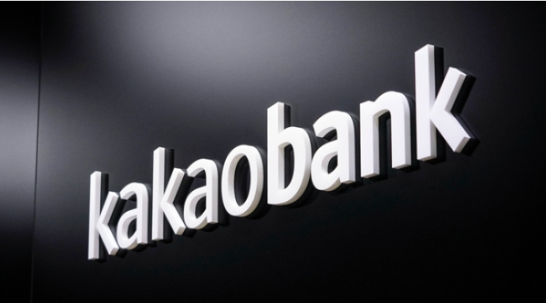

KB금융-웨이브릿지 맞손…"디지털 자산 생태계 구축" |
|
| KB금융그룹이 핀테크 기업 '웨이브릿지'와 디지털 자산 생태계 구축을 위한 업무 협약을 체결했다고 2일 밝혔다. 웨이브릿지는 블록체인 기술을 활용해 금융 투자플랫폼 등 금융상품과 솔루션을 개발하는 핀테크 기업으로, KB금융이 선정한 'KB스타터스 싱가포르' 4개사 중 한 곳이다. KB금융은 이번 협약을 통해 금융그룹의 디지털자산 비즈 분야별 경쟁력을 제고하고, 디지털자산의 제도권 편입 등 시장 환경변화에 선제적으로 대응할 예정이라고 설명했다. |
|  |
이게 얼마만이야...사상 최대 실적 카카오뱅크, 10%대 급등 |
| 사상 최대 규모의 실적을 내놓은 카카오뱅크가 두자릿수의 급등세를 보이고 있다. 반면 같은날 실적을 내놓은 카카오게임즈는 어닝쇼크라는 평가를 받으면서 약세를 보이고 있어 대조를 이루고 있다. 2일 오전 9시 55분 현재 카카오뱅크는 전일 대비 1800원(10.40%) 오른 1만9100원에 거래되고 있다. 카카오뱅크 주가가 10% 이상 오른 것은 상장 직후였던 지난해 8월 17일 이후 15개월 반 만이다 |
[코인뉴스] 비트코인, 美 FOMC 경계감에 횡보세 |
|
| 비트코인이 미국 연방준비제도(Fed, 연준)의 연방공개시장위원회(FOMC)를 앞둔 경계감에 횡보세를 보이고 있다. 2일 암호화폐 거래소 업비트에 따르면 이날 오전 8시 30분 기준 1비트코인은 2876만5000원으로 전날과 비슷한 수준을 보였다. 빗썸에서는 0.1% 내려간 2874만1000원을 기록했다. 1~2일(현지시간) 열리는 FOMC 회의에서 연준이 기준금리를 0.75%포인트(p) 인상할 것으로 예상되는 가운데 비트코인은 2800만원대에서 횡보세를 이어가고 있다. |